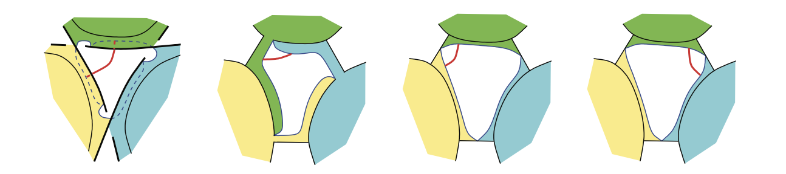

Advances in Geometric and Quantum Topology
July 13-16, 2026 at Temple University, Philadelphia
Confirmed Speakers
Rhea Palak Bakshi (UC Santa Barbara)
Giulio Belletti (UC Louvain)
Matthew Harper (Michigan State University)
Matt Hedden (Michigan State University)
Diana Hubbard (Brooklyn College, CUNY)
David Jordan (University of Edinburgh)
Joanna Kania-Bartoszynska (National Science Foundation)
Shashini Marasinghe (Michigan State University)
Allison Moore (Virginia Commonwealth University)
Jessica Purcell (Monash University)
Radmila Sazdanovic (North Carolina State University)
Adam Sikora (University at Buffalo)
Patricia Sorya (University of Ottowa)
Anastasiia Tsvietkova (Rutgers University, Newark)
Roland van der Veen (University of Groningen)
Joshua Wang (Institute for Advanced Studies)
Helen Wong (Claremont McKenna College)
Matt Young (Utah State University)
Organizers: Chris Cornwell (Towson University), Renaud Detcherry (Institut de Mathématiques de Bourgogne), Dave Futer (Temple University) , Christine Ruey Shan Lee (Texas State University)
Acknowledgements
The conference is partially funded by NSF conference grant No. 2607939.